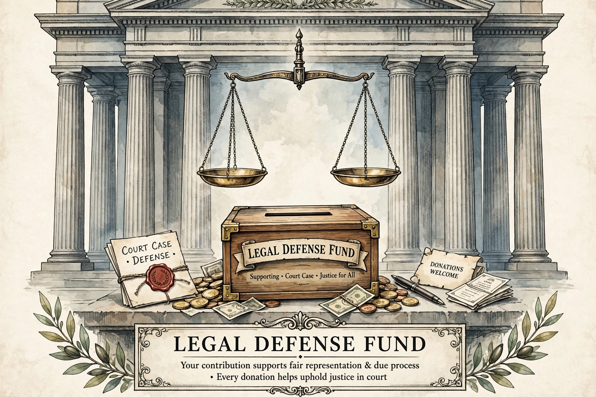

A legal defense fund, or legal defence fund, is an account set up to pay for legal expenses, which can include attorneys' fees, court filings, litigation costs, and related expenses for a specific person, group, or cause.

Funds are created for criminal defendants, whistleblowers, public officials facing investigations, civil-rights litigation and public-interest cases. Notable examples include the NAACP Legal Defense and Educational Fund, founded in 1940, and funds established for political figures and for journalists facing prosecution.
Donations may raise questions about transparency, conflicts of interest, gift rules for officials, and tax treatment. In the United States, some funds are organised as trusts or as non-profit organisations, and crowdfunding has become a common way to raise them. See Public interest law and NAACP Legal Defense Fund.